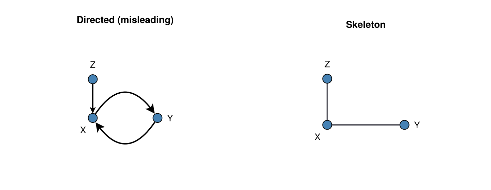
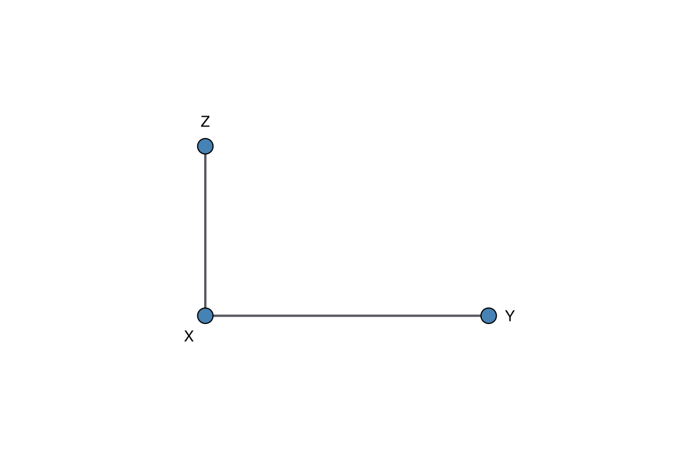
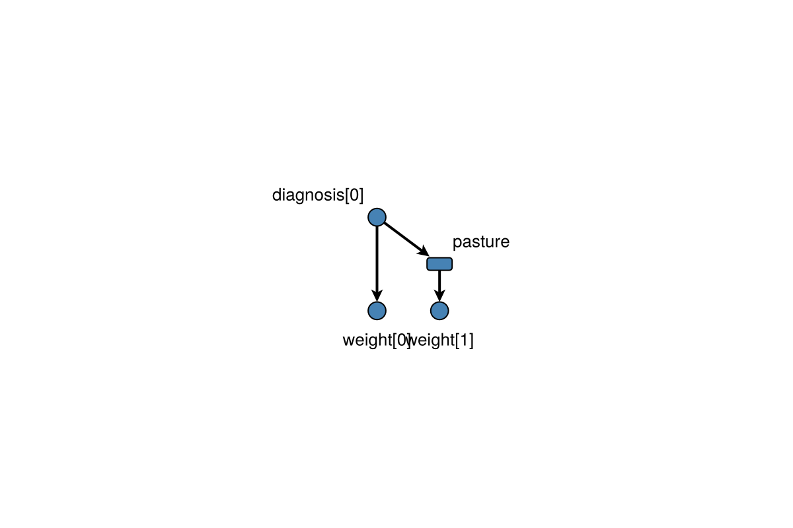

Skeletons and time-indexed plots
Two layout helpers sit beside ordinary dagplot: undirected skeletons (CPDAG / PC-style output) and time-indexed grids for graphs unrolled over occasions.
Undirected skeletons
PC and related algorithms often return an undirected edge as a pair of opposing arrows. Plotting both looks like a cycle; collapse them first with digraph_skeleton, or use dagplot_skeleton so arrowheads stay off and edges use UNDIRECTED_EDGE_COLOR.
using Graphs, DAGMakie, CairoMakie
# Opposing arcs encode an undirected edge between X and Y; Z → X is directed.
g = SimpleDiGraph(3)
add_edge!(g, 1, 2) # X → Y
add_edge!(g, 2, 1) # Y → X (undirected {X,Y})
add_edge!(g, 3, 1) # Z → X
labels = ["X", "Y", "Z"]
# Z above X so reciprocal X–Y arcs stay clear of Z.
layout = Point2f[Point2f(-1, 0), Point2f(1, 0), Point2f(-1, 1.2)]
fig = Figure(size = (720, 280))
ax1 = Axis(fig[1, 1], title = "Directed (misleading)")
ax2 = Axis(fig[1, 2], title = "Skeleton")
dagplot!(ax1, g; labels = labels, layout = layout)
dagplot!(ax2, digraph_skeleton(g); labels = labels, layout = layout)
fig
One-liner when you only need the skeleton figure:
fig, ax, p = dagplot_skeleton(g; labels = labels, layout = layout)
fig
Passing an undirected SimpleGraph to dagplot / dagplot! also suppresses arrowheads and applies the undirected edge colour.
Time-indexed unrolling
For a graph with n_variables × n_times nodes in CausalDynamics order (outer loop over occasions, inner loop over variables), use dagplot_time_indexed. Columns run left→right in time; rows are variables.
With color_by = :ancestors (or :ancestors_temporal), exposure and outcome roles propagate across each variable row so later occasions of the same variable keep treatment / outcome / ancestor colours (#5). Pass scalar node indices or (variable_index, time_index) tuples for exposure and outcome.
using Graphs, DAGMakie, CairoMakie
# W, A, Y × two occasions (CausalDynamics unroll order).
g = SimpleDiGraph(6)
add_edge!(g, 1, 2) # W₁ → A₁
add_edge!(g, 1, 3) # W₁ → Y₁
add_edge!(g, 4, 5) # W₂ → A₂
add_edge!(g, 4, 6) # W₂ → Y₂
add_edge!(g, 2, 5) # A₁ → A₂
add_edge!(g, 2, 6) # A₁ → Y₂
fig, ax, p = dagplot_time_indexed(
g, 3, 2;
labels = ["W₁", "A₁", "Y₁", "W₂", "A₂", "Y₂"],
color_by = :ancestors,
exposure = (2, 1),
outcome = (3, 2),
figure_size = (640, 260),
)
figFor manual styling without the plot wrapper, use apply_node_type_styling or temporal_role_styling.
Mixed occasion and enduring nodes
When an unrolled graph contains enduring variables as well as occasion variables, use dagplot_temporal with the graph's explicit node keys. An occasion key is (variable, time); an enduring key is (variable, nothing). Enduring nodes are drawn as rounded rectangles and placed at their onset time, while occasion nodes remain circles. Shape therefore encodes temporal persistence, independently of colour and stroke styling for causal role. It does not indicate agency, a self, a formal constraint, or an attractor.
using Graphs, DAGMakie, CairoMakie
keys = [(:diagnosis, 0), (:pasture, nothing), (:weight, 0), (:weight, 1)]
g = SimpleDiGraph(4)
add_edge!(g, 1, 2) # diagnosis[0] → pasture
add_edge!(g, 1, 3) # diagnosis[0] → weight[0]
add_edge!(g, 2, 4) # pasture → weight[1]
fig, ax, p = dagplot_temporal(
g,
keys;
temporal_modes = [:occasion, :enduring, :occasion, :occasion],
onset_times = [0, 1, 0, 0],
labels = ["diagnosis[0]", "pasture", "weight[0]", "weight[1]"],
)
fig
Spacing keywords dx and dy stretch columns and rows. For a TemporalUnrolling from CausalDynamics.jl, prefer dagplot_temporal(unrolling) after using DAGMakie (labels via temporal_node_label; enduring/occasion markers from the CausalDynamics extension).
The display layer does not infer temporal provenance. When an auditable distinction is needed, obtain records from CausalDynamics with temporal_edge_records(unrolling) and use the role field to annotate or inspect the figure: :constitutive records form an enduring node, :recurrent_influence records reuse it at later occasions, and :occasion_influence records connect time-indexed nodes. Passing these records to plotting code is display metadata; it must not create alias vertices or change the graph used for identification.
See also
- Visual Grammar — DiD SWIGs and interaction IDAGs
- Node Types & Styling —
EffectMeasure/SwigFixedcolours - Basic Plotting —
layout_modeand generaldagplotoptions